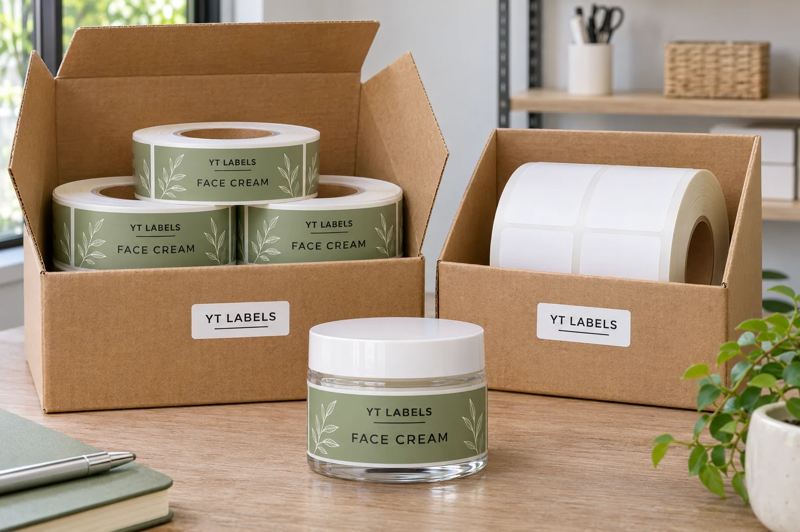
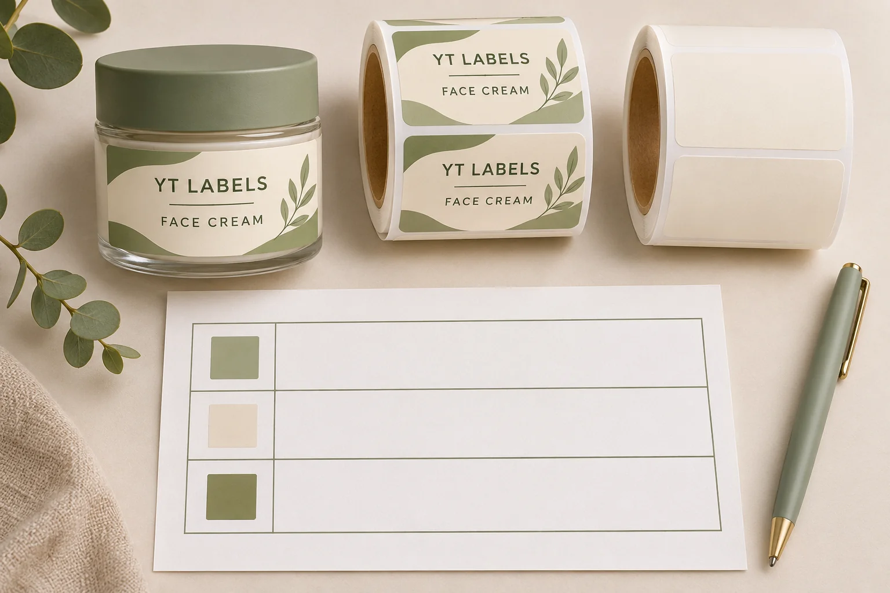

Before accepting a label stocking proposal, ask whether the supplier will print the whole quantity now or produce each release later. Both arrangements can use scheduled deliveries, but they commit different things. A finished-label holding program commits an artwork version and construction to physical stock. A release-production arrangement still needs the material and production capacity for later runs to be confirmed.
Choose using the stability of your artwork, usable demand by design and the supplier's written commitment. A lower unit price is useful only if the quantity, release conditions and responsibility for unused stock suit the project. Keeping cartons outside your own warehouse does not, by itself, remove your purchase commitment.

Ask which stage is being held
Request a plain description of the proposed supply: finished printed labels, raw material allocated to the project, or future production against releases. If the offer combines these, identify each part. “Stock available” is incomplete until the design, material reference, quantity and stock state are named.
A published Zebra inventory-program fact sheet distinguishes producing individual releases from printing an entire supply and holding it for later dispatch. That provider example makes the distinction concrete. Its prices, holding periods, availability promises and eligibility do not establish terms for cosmetic labels or YT Labels. Ask whether the arrangement is available for your project before planning around it.
Compare the choice with buying the required labels now and receiving them at an agreed site. If supplier holding is unavailable or its terms do not suit the job, direct receipt can still be workable when the receiving site can maintain the identified construction's storage conditions. The comparison should include the work and commitment at every proposed location.
Map demand to the artwork that will actually be used
List the amount needed for each approved design, the intended filling windows and the demand you have not confirmed. Separate a forecast from a release request. Then mark which copy, bottle, formula or visual changes are still being considered. An unchanged total forecast may hide a change in the mix of versions.
For a hypothetical stable lotion design, printing a defined quantity in advance might support later dispatches if the actual holding arrangement, stock condition and release process are acceptable. For a new range with unsettled back-panel copy, finished stock may lock in a version the brand cannot use later. Neither situation establishes a universal minimum or a savings threshold.
If the proposal holds raw stock instead, ask what is actually reserved and whether the printer has committed a production slot. Material allocation alone does not demonstrate finished-label availability. Keep those two responses separate in the planning record, and do not promise a filling date from an unconfirmed future print run.

Complete a stock commitment check before accepting the offer
| Field | Obtain a specific answer | What the answer settles |
|---|---|---|
| What exists | Design revision, construction, quantity and whether stock is raw, printed, finished or only planned. | Which work remains before the labels can be supplied. |
| What is committed | Accepted order quantity, payment events, holding charges and treatment of unused or changed versions. | The buyer's commercial exposure under the actual offer. |
| How it stays usable | Holding conditions, traceable stock references and the basis for any stated usable period. | Whether the later release relies on evidence for this construction and storage history. |
| How it is released | Request notice, release quantities, dispatch acceptance, stock reporting and response to discrepancies. | What must happen after a request before a filling plan can rely on shipment. |
Start with the forecast and current specification, request the completed response, and identify any row the supplier has not confirmed. Compare the total accepted quantity with usable demand rather than with the largest possible forecast. Review the relevant written terms with the people responsible for the order. This checklist does not interpret ownership or transfer risk under a contract.
Ask for a dated stock report identifying the quantity by version and any stock awaiting review. A carton count without the agreed count basis may be inadequate for planning. If the design changes, record the supplier's response about stock already produced, stock not yet produced and any proposed new work separately.
Separate the inventory decision from the shipment schedule
Once the commitment is accepted, the split-delivery guide controls each shipment and remaining order balance. The replenishment guide helps decide when to seek the next confirmed supply. Neither substitutes for knowing whether the stock behind a release has actually been produced.
Hold approval if the offer does not name the stock state, if unused-version responsibility is unresolved, or if a claimed immediate release still depends on unconfirmed printing. Choose the arrangement whose commitments your brand can accept, with open production and inventory assumptions visible.
Ask for a project-specific stocking response
Send the approved versions, quantity by design, expected use windows and unresolved artwork changes. Ask whether production-to-release or finished-stock holding is available, and request its charges, release procedure and commitment basis. The form prepares your message; send supporting records by email or WhatsApp.
Prepare an inventory inquiry